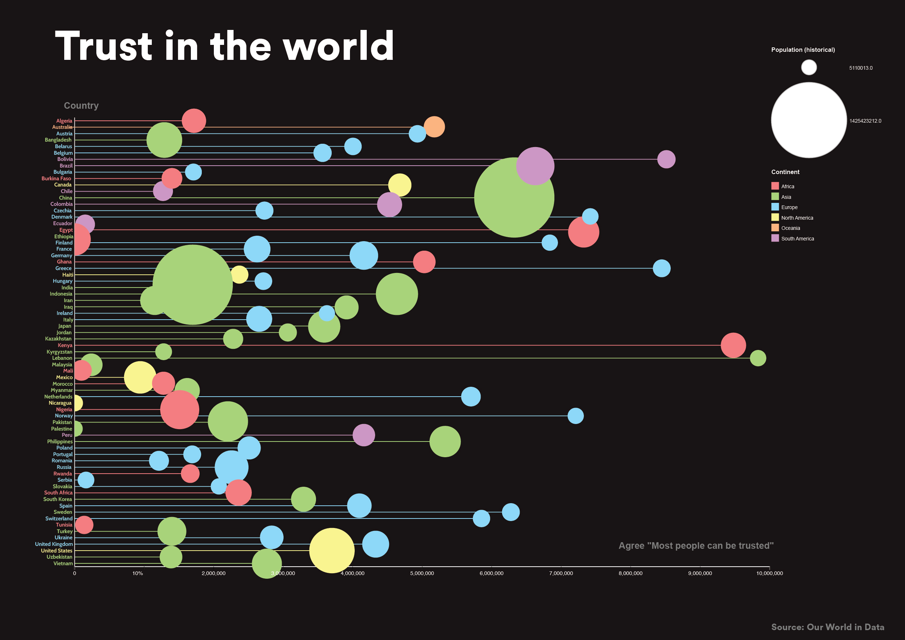

2025
Trust plays a crucial role in shaping societies, influencing everything from economic growth to social cohesion. This visualisation explores trust levels across countries, using data from Our World in Data.
I used RawGraphs to load the data into a visualization. I quickly realized that there were a lot of countries with available data, making the visualization hard to read.

Adding colors for the continents helped, but it was still chaotic.

Here, I experimented with coloring the lines as well to see if it would improve readability.

This version includes all the countries, so if you want, you can find specific insights, but it’s still not very readable. That’s why I decided to remove some countries and focus only on trust in Europe.

I also added two extra dimensions to this visualization. You can now see the Gini coefficient represented by a color gradient and the GDP of each country indicated by the pink circles—the bigger the circle, the higher the GDP.